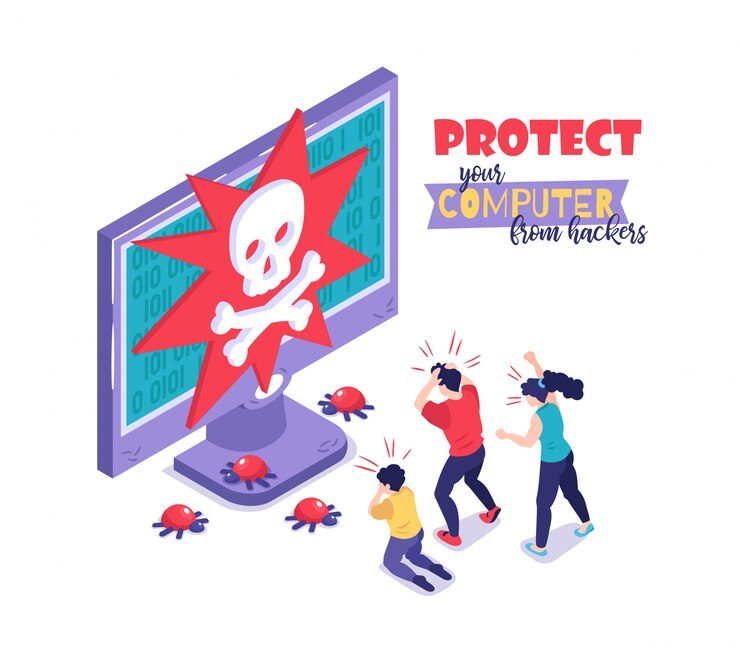
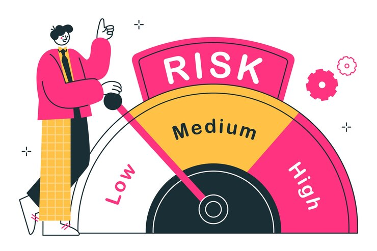

Strengthening Cybersecurity with Penetration Testing
Penetration testing identifies vulnerabilities by simulating real-world cyberattacks, helping organizations strengthen their security. It ensures compliance with regulations, prioritizes critical fixes, and fosters awareness, empowering teams to stay ahead of threats.
Proactive Security Assessment
At Dazica Service, we know that anticipating threats is crucial to maintaining a secure digital environment. Our Proactive Security Assessment services are designed to detect vulnerabilities early, enabling you to take preventative measures against potential cyberattacks. Here's how we help you build a robust security foundation:
- Comprehensive Vulnerability Identification: We conduct detailed evaluations of your systems, networks, and applications to identify hidden vulnerabilities and weaknesses that could be exploited by attackers.
- Early Threat Detection: By simulating potential attack scenarios, we help you discover risks before they turn into breaches, ensuring your data and systems remain secure.
- Prioritized Action Plans: Our assessments provide a clear roadmap for addressing critical issues, helping you allocate resources efficiently and effectively.
Our Proactive Security Assessment services empower you to stay one step ahead of evolving cyber threats, ensuring the safety and resilience of your digital infrastructure. By addressing vulnerabilities proactively, we help you protect critical assets, reduce risks, and build trust with stakeholders in an increasingly digital world.
We understand that anticipating threats is key to a strong defense. Our penetration testing services identify vulnerabilities and potential entry points in your systems before attackers can exploit them. By proactively addressing these weaknesses, we help you stay one step ahead of cybercriminals.

Simulated Attack Scenarios
we believe the best way to prepare for cyber threats is to experience them in a controlled environment. Our Simulated Attack Scenarios provide a real-world perspective on your organization’s security, highlighting vulnerabilities and testing your defenses. Here's how this service ensures your readiness:
- Realistic Threat Simulation: Our ethical hackers replicate the tactics, techniques, and procedures used by actual attackers, providing an authentic evaluation of your security posture.
- Gap Identification: By simulating various types of attacks, we uncover weaknesses in your defenses, ensuring you address them before they can be exploited.
- Incident Response Enhancement: Our scenarios give your security team hands-on experience, improving their ability to effectively respond to and mitigate real threats.
- Risk Exposure: We highlight areas where your organization may be vulnerable, helping you prioritize security measures based on the most likely attack paths.
- Security Team Training: Simulated attacks also serve as a training ground, allowing your team to refine their skills and improve their readiness for future incidents.
At Dazica Service, our Simulated Attack Scenarios service equips you with the insights and tools needed to strengthen your security infrastructure. By testing your systems under realistic conditions, we help ensure that your defenses can withstand the most sophisticated cyber threats.

Risk Mitigation
At Dazica Service, we understand that managing risks is key to maintaining a secure environment. Our Risk Mitigation services focus on identifying, assessing, and addressing vulnerabilities to minimize the potential impact of cyber threats on your organization. Here's how we help protect your assets:
- Prioritized Action Plans: We assess vulnerabilities based on their severity, helping you prioritize which issues need immediate attention and which can be addressed over time.
- Cost-Effective Solutions: By focusing on the most critical risks first, we help you allocate resources efficiently, ensuring that security measures provide maximum protection with minimal disruption.
- Proactive Risk Reduction: We don’t just identify risks—we provide actionable recommendations to reduce exposure, implementing safeguards to minimize the likelihood of attacks.
- Compliance Support: We ensure that your organization’s risk mitigation strategies align with industry standards and regulatory requirements, helping you avoid potential fines and penalties.
- Continuous Monitoring: Our ongoing risk assessments and monitoring services ensure that your security posture evolves alongside emerging threats, allowing for adaptive protection.
Our Risk Mitigation services empower you to take control of your security landscape. We help you reduce vulnerabilities, strengthen defenses, and ensure that your organization can respond swiftly to any threats, all while maintaining compliance and efficiency..
Regulatory Compliance
We recognize the importance of adhering to regulatory requirements to safeguard your business and protect sensitive data. Our Regulatory Compliance services help you meet industry standards and legal obligations while ensuring that your security measures are effective and up to date. Here's how we assist you in staying compliant:
- Gap Analysis and Recommendations: By identifying areas where your current security framework falls short, we provide clear and actionable steps to align with industry standards.
- Audit Preparation: We assist in preparing for audits by ensuring your systems, policies, and procedures are fully compliant and ready for inspection.
- Policy and Procedure Optimization: We help create and update internal security policies that reflect the latest regulatory requirements, ensuring you remain compliant over time.
- Ongoing Compliance Support: As regulations evolve, we provide continuous monitoring and updates to ensure that your organization stays aligned with the latest legal and industry changes.
At Dazica Service, we take a proactive approach to regulatory compliance, helping you avoid costly fines and reputational damage. By ensuring your systems meet required standards, we help you build trust with clients, partners, and stakeholders.
Our team works closely with you to streamline compliance efforts, providing a solid foundation for secure, trusted business operations. By aligning your security infrastructure with the right regulations, we ensure that your business can grow and innovate while maintaining a high level of security and compliance at all times.
Improved Security Awareness
We believe that the strength of your cybersecurity lies not just in technology, but in the knowledge and vigilance of your team. Our Improved Security Awareness services help build a culture of cybersecurity within your organization, ensuring that every member understands the importance of safeguarding sensitive data. Here's how we help elevate your team’s security awareness:
- Tailored Training Programs: We design customized training sessions that focus on real-world scenarios, teaching employees how to recognize and respond to common security threats like phishing, malware, and social engineering.
- Ongoing Education: Cybersecurity is an ever-evolving field, and our programs provide continuous learning opportunities, ensuring your team stays up to date on the latest threats and best practices.
- Interactive Workshops and Simulations: We conduct hands-on exercises, such as simulated attacks, to help your staff practice real-time responses, boosting their confidence in dealing with security incidents.
- Security Culture Integration: We work with you to embed security awareness into your organizational culture, making cybersecurity a shared responsibility across all levels of your company.
A culture of security awareness strengthens your organization’s resilience, ensuring that security is not only a top-down priority but a collective effort. With a well-trained, alert team, you can significantly reduce the risk of breaches and enhance your overall cybersecurity posture.